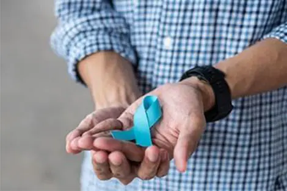
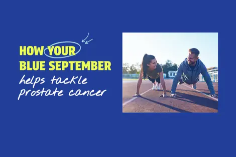
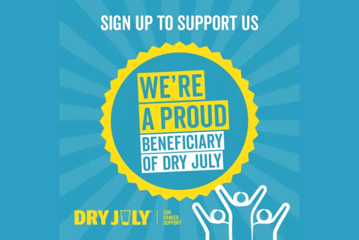

Getting Involved
Covering Fundraising and direct contributions, ways in which you can get involved are shown below.

We’re so glad you’re keen to help!
Prostate Cancer Foundation NZ provides vital support to individuals, families and whānau facing prostate cancer. We raise awareness, fund research, share information, and advocate for earlier diagnosis, better treatment, and higher standards of care. With no government funding, all these activities are only possible thanks to generous people like you, who fundraise, donate, or leave gifts in wills. Thank you.

Donate
Regular Giving
Becoming a regular giver with the Prostate Cancer Foundation NZ allows you to have a significant long term impact on the lives of men living with prostate cancer and that of future generations. Your regular support will help ensure continuity of essential services both now and in to the future. You have the power to choose how much or little, and how often you want to give. Donations over $5 are eligible for a New Zealand charitable giving tax credit.
Offline Donation
We realise that making an online contribution is not always possible. Here’s how you can make an offline donation.
The Prostate Cancer Foundation is a registered charity (no CC30635). Receipts will be issued for all donations, those over $5.00 are tax deductible. Here are the details you need to make a direct deposit:
Account Name: Prostate Cancer Foundation of New Zealand
Bank: ASB Bank
Account Number: 12 3031 0184117 00
To receive a receipt please include your name as a reference and email your details to accounts@prostate.org.nz likewise please email or call us if you have any questions.

Blue September - tackle prostate cancer together
Getting involved is easy. Take on a fitness challenge like push-ups, cycle for the cause, or host a get-together. Or come up with something uniquely you — the sky’s the limit! Hop on over to blueseptember.org.nz for a little inspo - there's no time like the present to register - for your dad, brother, partner, mates, and the wider whānau.
Buy Blue Ribbon Merchandise
Whether you're wearing it, gifting it or taking it to your next fundraiser, every purchase is a simple way to show your support, spark a conversation, and help raise prostate cancer awareness. From T-shirts to golf balls, and bike balls, and everything in between, you'll find it all here in our official blue ribbon merchandise store.

Dry July
PCFNZ is proud to be a beneficiary of Dry July, through which we're able to reach more men living with prostate cancer with programmes like Prost-FIT, helping them improve their quality of life and feel supported throughout their journey. Going dry isn't just about giving something up. It's about showing up for the men in our lives. Sign up today.
Section 1 of 2